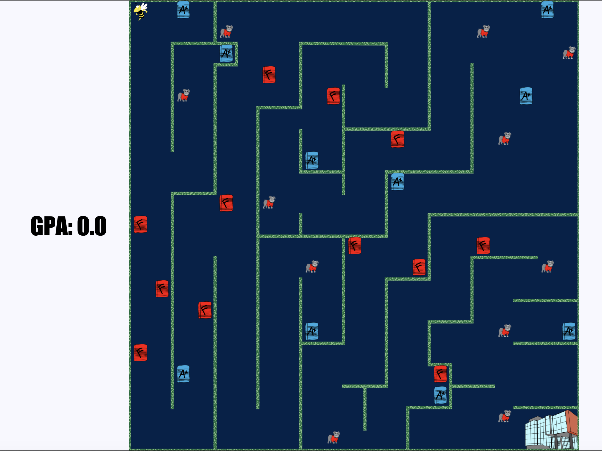
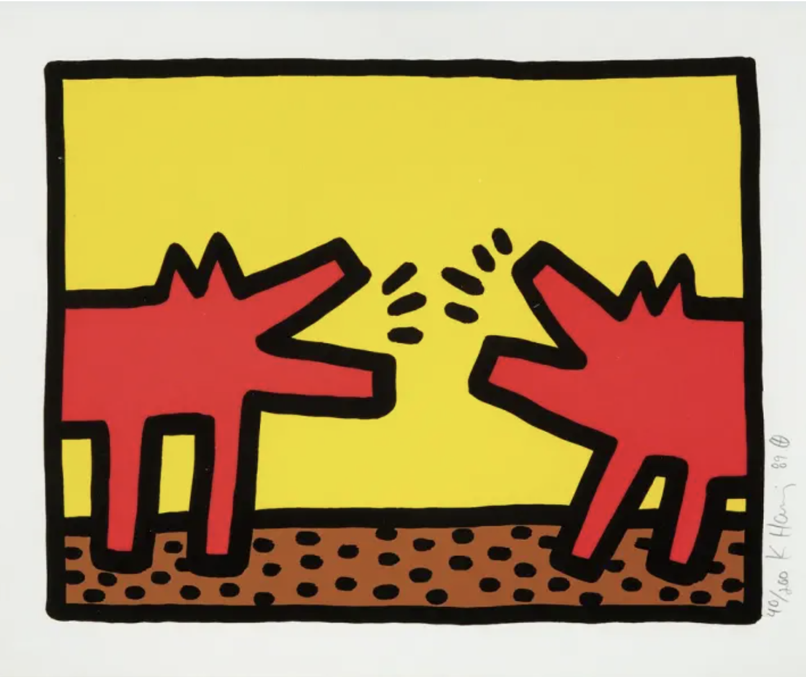

This website was developed in 2020 using HTML and CSS and is hosted by Github. You can view the source code here.
Buzz and the Long Way Home is a classic maze game that was developed in HTML and JavaScript. The graphics were created using Adobe Illustrator. The objective is to collect good grades as the Georgia Tech Buzz mascot, while avoidng the UGA Bulldog and failing grades. The code is available here. Play the game!
In a group, I built a farming simulator using JavaFX for CS 2340: Objects and Design. Originally built as a desktop app, I have included a video to highlight its functionality. My contributions include but are not limited to: watering and growing of plants, hiring farm workers, implementing graphics and sound, incrementing time, creation of object classes, implementing a way to "win", configuration screen functionality, limited graphics (created in Adobe Illustrator). You can check out the code for this project.
For the course, LMC 2700: Intro to Computational Media, I created a virtual reality scene depicting a work from one of my favorite artists, Keith Haring. The scene is developed using AFrame within HTML. Find the code here. An interactive version of this scene is also available.
